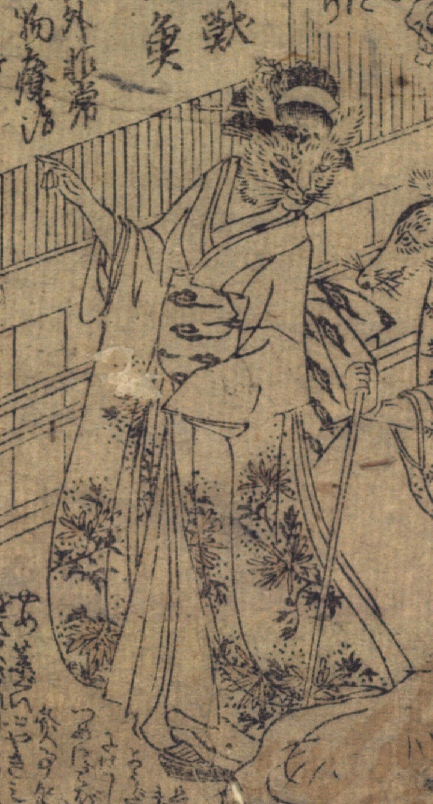

着物をきて、女性の姿をした猫。指さししている。
著作者：壁前亭九年坊作，鳥高斎栄昌画／出典：親書誌：U426_nichibunken_0475：即席御療治；ソクセキオンリョウジ／日付：2025／資源識別子：U426_nichibunken_0475_0001_0002
Copyright (c)2010- International Research Center for Japanese Studies, Kyoto, Japan. All rights reserved.